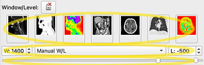

3D slicer （Win, Mac, Linux）
Things to do/できること
- Installation/インストール
- DICOM, Basic operation/DICOM画像で基本操作に慣れる
Import DICOM data/データ読込
Display/画面表示 B、R、G、Y 青、赤、緑、黄
View DICOM slice/スライス閲覧
Zoom in and out/拡大縮小
Move/移動
Hansfield value/CT値の調節
3D View/青画面
Screen shot/スクリーンショット - CoMBI, Serial JPEG image/いざCoMBI
Unit/単位設定
Serial JPEG image/連続JPEG画像の準備
Manage serial file name/ファイル名一括変換、必要に応じて
Load serial image/連続画像の読み込み
Settings for serial image/連続画像の設定
Volume Rendering/ボリュームレンダリング
Movie/動画
Save/保存
Segmentation/セグメンテーション、体積
3D printer/3Dプリンタ
3D slicer is free and open source software. It has been developed by Brigham and Women's Hospital (Harvard-affiliated hospital) since 2002, and updates and extensions (Extensions = plug-ins) continue to be released. It supports various operating systems including Windows, Mac, and Linux, so it is recommended for CoMBI users. At the beginning of CoMBI development in 2014, I tested 3D viewers that could handle JPEG serial images and selected OsiriX. However, OsiriX became a paid app, and Horos, which is the open source version of OsiriX, remained unstable, and OsiriX/Horos only supports MacOS, which was not the best situation for CoMBI to be popular.
3D slicer has been confirmed to work stably on laptops. It worked on typical laptops for students (2018, i5-8250U 1.6-1.8GHz, 8GB RAM, and i5-7300U 2.6-2.7GHz, 8GB RAM, both with integrated graphics, Windows 10). The size of the application is 1.2 GB for 3D slicer compared to 150 MB for Horos. (If students have limited disk space as their student life progresses, make sure to free some space before installing!) The environment used in this document is 3D slicer v4.11 (2020.9.30), macOS 10.15.7 iMac 2017 (4.2GHz 4-Core Intel Core i7, ,64GB 2400 MHz DDR4, RadeonPro 580 8GB). MacBookPro15 2018 (2.9GHz 6-Core Intel Core i9, 32GB 2400MHz DDR4, RadeonPro Vega20 4GB), MacBookPro16 (2021, M1 max, 64GB unified). Official recommendations are; 4GB memory at minimum, 8GB recommended, dGPU, VRAM 2x larger than data volume, multi core CPU.
Official documentation can be found on the 3D slicer homepage. Also, many instruction videos can be found on the Internet. I am still practicing 3D slicer, especially "movie" and "segmentation". Please refer to the Official website for detail.
3D slicerは、無料のオープンソースソフトウェアです。米国ブリガム・アンド・ウィメンズ病院（ハーバード大学関連病院）が 2002年から開発していており、現在もアップデートや機能拡張（Extensions = plug-ins）が続けられています。対応OSは、Windows、Mac、Linuxと幅広いので、多様なCoMBIユーザにおすすめです。
CoMBI開発当初の2014年、JPEG連続画像が扱える3Dビューワを検証し、多機能で動作が軽いOsiriXを選択しました。しかし、OsiriXはのちに有料になり、オープンソース版OsiriXの流れをくむHorosは不安定さが残り、OsiriX/HorosにはMacOSにしか対応しないなど、CoMBI普及の観点からはベストな状況ではありませんでした。かつては、OsiriXと3D slicerとの間に機能的な違いがありましたが、現在はどちらもできることは同じです。（かつては、動画描きだしが簡単にできるOrisiX、できない3D slicerでしたが、2016年の3D slicer v4.6以降は、動画書き出し機能が実装されています。）
3D slicer はノートパソコンでも安定して動作するのを確認しています。大学入学時に購入する典型的なスペック（2018年製,i5-8250U 1.6-1.8GHz, RAM8GB、および、i5-7300U 2.6-2.7GHz, RAM8GB, 共に統合グラフィクス、Windows10）でも動作しました。アプリ本体の容量は、Horos 150MBに対して、3D slicerは1.2GBとなっています。（もし、学生生活が進むに連れ、ディスク残量が少なくなっている場合は、空き容量を確保の上、インストールしましょう。）
本書での3D slicer利用環境は、3D slicer v4.11 (2020.9.30), macOS 10.15.7 iMac 2017 (4.2GHz 4-Core Intel Core i7, ,64GB 2400 MHz DDR4, RadeonPro 580 8GB). MacBookPro15 2018 (2.9GHz 6-Core Intel Core i9, 32GB 2400MHz DDR4, RadeonPro Vega20 4GB), MacBookPro16 (2021, M1 max, 64GB unified) です。3D slicer 公式の推奨環境は、「メモリ最低4GB 推奨8GB〜、単体GPU推奨、データ量より大きいVRAM、CPUマルチスレッド推奨」です。
公式Documentが3D slicerのホームページにあります。また解説動画もネットで多数見つかります。筆者は、3D slicerの練習中で、とくに「動画」「セグメンテーション」はあいまいさ、不完全さがのこります。くわしくはぜひ公式サイト、説明書を参照してください。
1. Installation/インストール
- Visit official site/公式サイト https://www.slicer.org/
- Go to
Download Slicerand download app for each OS（Win、Mac、Linux）
Windows
- Open installer (.exe file).
- For start app, go to
Windows Start. -
For uninstall app, use
Windows settings,Apps&Features.
インストーラ（.exeファイル）を起動する。注意：インストール先のアドレスは、英語のみで表記されていることが望ましい。日本語が入らないほうがよい。アプリの起動は、Windows Startメニューより。アンインストールは、Windows settingsの、Apps&Featuresを使用する
MacOS
- Open install package (.dmg file).
- Permit installation at
System Preferences>Security & Privacy>General>Allow apps downloaded from:. - Drag and drop
Slicer.appinto Application folder. - For start app, go to
Application. -
For uninstall app, just delete
Slicer.app, or useAppCleaner(freeware).
インストールパッケージ（.dmgファイル）を起動する。「開発元が確認できません」というメッセージがでるので、環境設定からインストールを許可する。Slicer.appをApplicationフォルダへ移動（ドラッグ＆ドロップ）。アプリの起動は、Applicationフォルダより。アンインストールは、Slicer.appを削除するか、削除アプリを使用する。
2. Basic operation/基本操作
You can practice basic operation with sample DICOM data that can be freely downloaded freely from 3D slicer data server. DICOM is a kind of file format that is used for medical images such as CT and MRI.
サンプルDICOMデータを使って、基本操作を練習できます。DICOMとはCTやMRIなどの医療画像に使われている画像形式です。
Module/モジュール
Modules are various "functions" of 3D slicer. In the initial window, you see Modules, and Welcome to Slicer by default. Modules will often appear in this document.

Modules pull-down and Download sample data button
モジュールとは、各種機能のこと。起動すると、Modules>Welcome to Slicerが表示される。あとにつづく説明で頻繁に出てくる用語
Load DICOM data/データ読込
- DICOM sample data: Press button
Download Sample Data. How about CTChest (40MB) for initial practice? -
DICOM data of your own: Drag&drop a folder including DICOM serial images from Finder (mac) to 3D slicer window (any place).
Load directly into DICOM databasewill create list of patients at local disc. After import, go toModules>DICOMand double click the patient name to open.Any Datais simple. I preferentially use this option for CoMBI to save disc space.
公式のサンプルDICOMデータで練習をはじめられる。Download Sample Dataボタンより、まずはひとつ（例えば、CTChest約40MB）ダウンロードする。手持ちのDICOMデータがある場合、Finder（Mac）から、フォルダごと、ドラッグ&ドロップする（ウィンドウ内のどこでもよい）。メッセージウィンドウSelect a readerでは、パソコン内に患者一覧データベースを作る場合Load directly into DICOM databaseを選んでOK。読み込み後、ModuleDICOMに切り替わって、患者一覧になり、患者名をダブルクリックすると、DICOMデータ表示画面へと進める。もしくは、とりあえずデータを見たい場合は、Any Dataを選ぶ。CoMBIの実験データでは、Any Dataを使っている。
View windows/画面表示
There are four different views, B, R, G, and Y (blue, red, green, and yellow). The red, green, and yellow views display the orthogonal planes (Multiple Planer Reconstruction, MPR). The blue screen "3D View" displays volume rendering (VR), etc. As a default, the four-plane display mode (Four-up) is selected and shows all 4 views at a time.
-
To change the screen layout, choose from the
Layouticons at the top orMenu bar>View>Layout. You can choose from various layouts such as 4-up or 1-up.
4種類の画面、B、R、G、Y（青、赤、緑、黄）がある。デフォルトでは、画面は4分割される4面表示モード（Four-up）が選ばれている。赤、緑、黄の画面には、直交面MPR（Multiple Planer Reconstruction）が表示される。青画面「3D View」には、Volume Rendering などが表示される。画面表示のレイアウトを変更するには、上部に並ぶアイコンLayoutから選ぶ。または、Menu bar>View>Layoutから選ぶ。4画面や1画面など多様なレイアウトから選べる。
Browse slices/スライス閲覧
Browsing slices means to flip through serial images. In the case of DICOM images such as CT, a single image is called "a slice", so the term "browse slices" is used in 3D slicer app and other DICOM viewer. There are 2-ways for browsing;
Scroll mouse wheelon the Red, Green, Yellow windows.-
Scroll baron the top of each windows.
連続画像をパラパラとめくって観ることです。CTなどのDICOM画像の場合、一枚の画像をスライスと呼ぶことから、閲覧する行為にも、スライスという用語がでてくる。方法は2通り；赤、緑、黄、各画面上でマウスホイールを回す、もしくは、各画面の上端にあるスクロールバーを使う。
Zoom in and out/拡大と縮小
Drag up and down with right button of mouseon the Red, Green, Yellow windows.- Input values. (Not usually use, but worthy for movie creation.)
- Expand menu by
Pin-like markon left top corner of each windows. - Go to
Extension mark>Field of View, and input value.通常は使わないが、動画準備のときに使えそう。
- Expand menu by
-
Centering buttonis available. The button is designed with squere and lines, and found between R、G、Y and scroll bar. When you get lost, press it to return to the center position.
Pin-like mark, Extension mark, Centering button, Field of View
基本的に、画面上で、マウスの右ドラック、各画面上で上下させることで、拡大縮小を行う。数値入力も可能で、押しピン様のマークPin-like markでメニュー表示させ、拡張マークExtension markのField of Viewで数値を入力する。通常は使わないが、動画準備のときに使えそう。中央にいっぱつで戻れるボタンがある。各画面のY、R、Gの右横の、中央配置ボタンCentering button。迷子になったときにこれを押すと便利。
Move/移動
Move image position up/down or right/left on R, G, Y window.
- Windows mouse:
Push center wheel+Drag -
Mac Magic Mouse:
Keyboard shift key+Mouse left button+Drag
赤、緑、黄画面に表示されている画像を上下左右に移動させたいとき
Brightness and contrast/CT値の調節
Bightness and contrast are called window level (L) and window width (W) in the case of CT images. For example, making brighter means increase window level (L), and increasing contrast means narrowing window width (W). There are 2-ways for adjusting;
-
Mouse: Select an icon
Adjust, and drag on the windows. Up/down change brightness, and right/left change contrast. -
Input values:
Module>Volumes. Presets are convenient for CT slices, but not for CoMBI images. Pull-down menu containsAuto W/L,Manual W/L, andManual Min/Max.Manual W/Lallows to input values.Scroll baris also available.
Preset buttons (upper), Pull-down menu (middle), and scroll bar (bottom).
明るさとコントラストの調整を行う。CT画像の場合、明るさを明るく/暗くすることを、Window level（L）を上げる/下げると表現する。コントラストを上げる/下げることをWindow width（W）を小さく/大きくすると、表現する。方法は2つある。方法1、マウス：アイコンAdjustで、画像上でドラッグする。上下ドラッグと左右ドラッグで、明るさとコントラストを変える。方法2、数値入力：ModuleVolumes。（上）プリセットボタンが並ぶ、どれかが最適ならラク。（中）プルダウンメニューで、Auto W/L,Manual W/L,Manual Min/Maxを選ぶ。Manual W/Lでは数値を入力できる。（下）Scroll barでも調節できる
Blue window; 3D view/青画面
Blue window is called 3D view, and used to display slices in 3D, volume rendered images and segmentations in 3D.
-
Slice in 3D View
- Expand menu from
Pin-like mark. - ON and OFF by pushing
Eye mark.

- Expand menu from
-
Volume Rendered image in 3D View (For detail, see later section "Volume Rendering"）
- Modules >
Volume Rendering - ON and OFF: by pushing
Eye markon the left-side ofVolume. - (
Presetcreate colorful rendering, but default grayscale is enough for initial viewing.) - Adjust brightness: sliding
Shiftscroll bar.
- Change orientation: Set arrow icon
Select tool, and drag VR image. Centering buttonat the left-top of the blue window reset the view at the center of specimen. Very useful when I get lost.
- Zoom in and out: Mouse
Scrollon the blue window. - Chanege color and transparancy: Advanced >
Volume Properties - Smooth viewing: Display >
Rendering>GPU. if you have dGPU - Smooth viewing: Display >
Display ROI. Restrict viewing area by handlingDots in the imageor Advanced >ROI>Scroll bar.
- Modules >
-
Segments in 3D View (For detail, see later section "Segmentation")
- Modules >
Segmentation Editor. ButtonShow 3Dswitch ON and OFF.
1. スライスを青画面に表示（画像一枚を青画面に表示）する：各画面の左上、押しピンマークPin like markからメニューを表示。眼の印Eye markで表示のON/OFF。2. Volume Rendringの画像を表示する：モジュール
Volume Renderingを選ぶ。眼の印Eye mark（Volumeの左側）のON/OFFで、青画面でのVolume Rendering像を表示/非表示。調節に関して、下記に簡単に紹介する。詳しくは後述「Volume Rendering」。
・Shiftをスライドさせ、明暗を調節する。デフォルトはグレースケール。Presetにカラフルな表示設定がある
・青画面左上のボタンCenteringで、中央に表示させる。迷子になったときに便利です
・ドラッグして、向きを変えられる。このとき、アイコン矢印のマークSelect toolにしておく
・マウスScrollを青画面上で上下させると、拡大縮小
・AdvancedVolume Propertiesで、 着色を調節したり、点を下げて透明度を調節したりする
・DisplayRenderingで、dGPUがあるパソコンなら、GPUを選ぶと動作が軽快になる
・DisplayDisplay ROIで、Volume Renderingする範囲を限定すると、動作が軽快になる。画像中の点Dots in the imageを動かす、または、AdvancedROIのScroll barを動かす3. セグメンテーションの結果を表示：モジュール
Segmentation Editorを選ぶ。ボタンShow 3Dで表示/非表示を切り替える。詳しくは後述「Segmentation」 - Modules >
Screenshot/スクリーンショット
-
Icon
Camera mark
-
In the Setting window, select window to be captured.
Save as...Set file name and directory. Available image format is only PNG.-
OK
アイコン、カメラマークCamera markを押すと、設定ウィンドウがでる。キャプチャーしたい画面を選び、Save as...。ファイル名と場所を指定する。形式はPNGのみ。OKをおして完了。
Close／閉じる
- Close app:
Slicer4.11>Quit slicer, or keyboardcommand + Q(Mac). -
Close only data:
File>Close scene.
Closeアプリを閉じる場合は、Slicer4.11>Quit slicer、またはショートカットcommand + Q(Mac)。データだけを閉じる場合は、File>Close scene。
3. Advanced operation/CoMBIの連続画像
Unit/単位
Change unit from mm (default) to µm (suitable for CoMBI).
- Menu bar >
Edit>Application Settings>Units - Check
Show advanced options - Length >
Preset>Select a preset>Micrometer OK-
Restart 3D slicer app. Menu bar>
Slicer 4.11>Quit Slicerand open app again. The unit should change to µm. If the unit remains mm, try after saving data. Open app, Change unit, load serial images, input value at Module>Volume, and save.
CoMBIなら、µmを選びたい。上記の手順でやってみて、3D slicerを再起動させると、変更が反映されるはず。もし、再起動させたらmmにもどってしまう場合は、連続画像を用意して「アプリ起動 > Unit選択 > 連続画像読み込み > モジュールVolumeで入力 > Save」の順でやってみる。
（2018-2021 memo：動作が重くなるかもしれないので、µmをmmのままで使うのがよい。単位を真面目に10µmなどにすると、アプリが落ちることがあった。画像は10µm/pixelだったとしても、10mm/pixelと入力する。デフォルトは1mmで、どうやらその付近なら安定していそう。パソコン環境やスペックが影響するかもしれない。XYZの比だけは正しくしておき、計測値が必要な場合は、あとで計算してから利用する。）（2022.3.11 memo：動作に変化はなかった。mm, µm, 比率をあわせた桁違い、いろいろな入力値を試して、セグメンテーションを実際に行った。MBP16。たんにスペックの問題だったか。かわりに、再起動でµmからmmに戻ってしまう症状をみつけた。）
Image file format/連続画像はJPEG
In CoMBI, the original image (RAW format) is converted to JPEG format, and 3D analysis is performed using serial JPEG images. 3D slicer 4.11 supports a variety of image formats and can directly import serial JPEG images. However, it does not seem to support PNG format. When PNG images are loaded, they are viewed on the R, G, Y window, but not in the blue, 3D View. Only one PNG image are shown but not browsed. Transparency of PNG is not reflected and becomes solid white.
CoMBIでは、オリジナル画像（RAW形式）をJPEG形式へ変換し、連続JPEG画像として3D解析を行う。3D slicerは、様々な画像形式に対応しており、連続JPEG画像を直接とりこめる。ただし、PNG形式は非対応のようだ。PNGでは、読み込めて（Load）、赤、黄、緑画面での閲覧まではできる。しかし、3D View-青画面（Volume Rendering像など）への表示ができない（一枚だけで不変）。また、透明を設定したPNGでは、透明が反映されず白になる
File name Batch conversion/ファイル名一括変換
File name batch conversion is done when there are special circumstances, such as filenames reverting from 9999 to 0001 at the middle of imaging. 3D slicer requires a complete sequential number (center column of the table). In case that the original filename is left behind the sequential number (right column of the table), 3D slicer will not recognize it as a serial image. When you change the numbering to complete sequential numbers, leave a note in the experiment notebook so that the original file names can be matched (so that the experiment can be reproduced). Just for information, Horos accepts both complete serial name (center column) and serial number plus original name (right column).
| Original name | Compatible for 3D slicer |
Uncompatible for 3Dslicer, but compatible for Horos |
|---|---|---|
| DSC_9997.jpg | 0001.jpg | 0001_DSC_9997.jpg |
| DSC_9998.jpg | 0002.jpg | 0002_DSC_9998.jpg |
| DSC_9999.jpg | 0003.jpg | 0003_DSC_9999.jpg |
| DSC_0001.jpg | 0004.jpg | 0004_DSC_0001.jpg |
| DSC_0002.jpg | 0005.jpg | 0005_DSC_0002.jpg |
| DSC_0003.jpg | 0006.jpg | 0006_DSC_0003.jpg |
- Windows OS:
Explore,Select multiple files,Rename. "Input-char+(1).jpg" will be created. Original fileneme will be lost. - Mac OS: ：
Finder,Select multiple files,Right click, sub-menu,Rename. For customize in some extent, use pull-downFormat, and following pull-downName and Counter. -
Adobe Bridge (Paid app) can custamize file names in any style you like.
撮影中にファイル名が9999から0001に戻ったとか、特別な事情があるときに、ファイル名を一括で変換する。CoMBIの撮影が通常に成功した場合は、必要ない。3D slicerの場合、完全な連番（表の中央列）が必要である。連番のうしろに元ファイル名を残した場合（表の右列）、3D slicerは連続画像とは認識しない。完全な連番に変更しても、元々のファイル名と照合できるよう（実験が再現できるよう）、実験ノートにメモを残す。ちなみに、Horosの場合、頭に連番さえあればよく、元ファイル名も残したスタイルが使える。
Windows OSやmacOSの組み込み機能で変換できる。Windowsの場合、Exploreで、複数選択Select multiple files、名称変更Renameすると、「入力文字(1).jpg」と、カッコつき連番数字になる。元のファイル名は残らないので注意する。Macの場合、Finderで、複数選択Select multiple files、右クリック（副メニュー）Right click, sub-menuより、ファイル名を変更Rename。完全変更や連番追記など、ある程度カスタマイズできる。プルダウンメニューのFormat, 次のプルダウン、Name and Counterを使う。もし、Adobe Bridge（有料アプリ）があれば、細かく設定ができる。
Load serial images/連続画像の読み込み
"Load" in 3D slicer is same as "open" or "import" in some other apps. 3D slicer can handle multiple sets of serial images simultaneously, similar to the fusion of PET-MRI in medical imaging. In the case of CoMBI, you can construct a volume rendering from a series of grayscale images and overlay a color cross-sectional image (MPR) on the volume rendering. Sets of images can be named differentially, to distinguish during later image process. The default name is the first image file name, but I have renamed them Gray for 3D, Color series, and so on.
- Drag and drop a folder containing serial images or a first image.
- Message window
Select a readerappears. SelectAny data, thenOK. - New window
Add data into the sceneappears. The app should recognize serial images automatically, but lets checkShow options. Confirm thatSingle fileis uncheck. -
Name sets of serial images. In the window
Add data into the scene, input names. Even after loading, the name can be changed at Module >Volumes,Active volume> pull-downRename current volume.
3D slicerで連続画像を開くことをLoadと呼ぶ。3D slicerは、複数の連続画像セット同時に扱える。医療画像における、PET-MRIの重ね合わせ（fusion）のような扱い方である。CoMBIの場合、グレースケール連続画像から Volume Renderingを構築し、カラーの断面像 (MPR)を 3面重ねて表示させるといった使い方ができる。3D slicer内での各セットの呼び名を決めておき、区別したほうが作業しやすい。デフォルトは、先頭の画像ファイル名になる。私は、Gray for 3Dや Color series などと呼び名を付けている。
1. 連続JPEG画像の読み込みには、フォルダごとドラッグする。または、最初の1枚をドラッグする。
2. 新しいウィンドウSelect a readerが出る。プルダウンメニューより、Any dataを選び、OK。
3. 新しいウィンドウAdd data into the sceneがでる。ここで、自動で連続画像を認識するはずだが、念の為、Show optionsにチェックをいれてオプション表示させ、Single fileにチェックがないことを確認する。
4. 同じウィンドウで、連続画像の呼び名を付けられる。ウィンドウAdd data into the sceneにおいて、呼び名を入力する。名付けはあとで変更でき、Module,Volumes,Active volumeのプルダウンメニュー、Rename current volumeで変更する。
Setting up serial images/連続画像の設定
- Voxel size: Module >
Volumes, ▽Volume information>Image Spacing. Input voxel size. XY are pixel size of images (µm/pixel), and Z is thichness of sectioning. -
Gradation: Module >
Volumes、Threshold. Input 0-255 for JPEG or Auto. (Dafault is ±1000 which should be suitable for CT iamge.) Settings here are used in Module >Volume Renderingautomatically, and coloring process is optimized.
設定するのは２種類で、ボクセルサイズと階調数。
1. ボクセルサイズは、モジュールVolumes, ▽Volume informationで、Image Spacingに、入力する。XYは画像のピクセルサイズ、Zは切削厚。
2. 階調数は、モジュールVolumes、Thresholdで、JPEGなら、0-255。Autoにすると、0-255になる。デフォルトはCT値っぽい、±1000になってしまう。ここで設定した階調数は、ModuleVolume Renderingに連動していて、そのときの色付け作業が容易になる。
Volume Rendering
Essentials/準備とツール
Eye mark and centering button/眼のマークと中央寄せマークです
- Serial images in grayscale
- Module >
Volume Rendering Eye markfor ON/OFF. 眼のマークで表示をON/OFFするCenteringbuttomn. 青画面左上、中央寄せマークScroll your mousefor zoom in/out マウススクロールで拡大縮小Left dragfor change orientation マウス左ドラッグでつかんで回すVolumefor select sets. 複数の連続画像セットを読み込んでいる場合、Volumeのプルダウンより、表示させたい連続画像セットを選択する。- Display >
Renderingfor select GPU if you have dGPU. プルダウンより、dGPUがあれば、GPUを選んだ方が動作が安定する
Coloring/色付け

The procedure is to create like this
In the tab Advanced...
- Color:
Scalar Color Mapping: Points can be added by clicking on the fradation bar. Select point and choose color from squere color button, next toPoint number. Point selection and color seletion can be done from small pull-down window at the right-top corner. In the example above, 3 points were added between darkest and brightest. Brighter point is colored in red for vasculature, middle in yellow for cardiac muscle, and darker in blue for adipose tissue. - Opacity1
Scalar Opacity Mapping: Change opacity in a small area. Points on the line can be added by clicking. To change opacity, grab these points or input value at the right top corner of the graph. Points can be deleted bydeletekey. - Opacity2
Gradient Opacity: Change opacity in a wide area. Points at both ends can be grab and moved. Points on the line can be added by clicking. To change opacity, grab these points or input value at the right top corner of the graph. -
Overlay MPR in 3D view (optional):
Pin like markin R, G, Y window expand menu, andEye markswitch ON/OFF of overlay.
1. 色の指定Scalar Color Mapping。点をダブルクリック、または点をクリックして選択しておいて、Pointの隣のボタンで、色を指定する。Point選択や色指定は、右上のプルダウンメニューからもできる。（今回は3色指定した。血管の明るいシグナルは赤、心筋を黄色、脂肪の暗いシグナルを青に。）
2. 次に透明度（各領域）を決めるScalar Opacity Mapping点をつかんで移動する。または、点をクリックして、Oに数値入力。点は追加できる。ライン上でクリック。点を削除するときは、キーボードのdelete。
3. 最後に、全体的な透明度Gradient Opacity、両端の2点は、クリックして、数値入力。ライン上をクリックすると、点を追加できる。 追加した点は、つかんで調節するか、数値を入力するか、どちらでもよい。
4. 面をVolume rendering像にかさねて表示することもできる。各画面の押しピンマークPin like markから眼のマークEye markで表示ON/OFF。
Tips
- Somewhat heavy sometime: Lower the quality of display. Go to Module >
Volume Rendering>Advanced>Techniques>Quality. SelectNormalrather thanAdaptive(default). Even Normal gives enough quality. Never useMaximum! because it results in freezing. -
Only 3D view is frozen sometime. Try
Pin like mark>Auto rotationonce, or wait for a while.
なんだか重いときは、表示画質をさげてみる。モジュールVolume Rendering>Advanced>Techniques>Quality:で、描出の質を3種から選べます。もっとも動作が軽快なNormalを選んでみる。デフォルトはAdaptive。Maximumはかなり重いようでほぼ固まります。3種どれでも画質はほとんで変わらず、Normalで十分きれいに描出するようです。
たまに青画面3D viewだけ、固まることがある。カーソルでは3Dイメージをぐりぐりできなくなる。ビューワのメニュー（押しピンマークPin like mark）から、Auto rotation, 自動回転ボタンを選んで、動かしてみると、カーソルが復帰する場合がある。それでもだめなら、しばらく待つと直っている。
Keep scenes/表示位置を記録
Module Scene Views can keep the scenes you made. In the 3D view and RGY windows, the positions of images can be kept and restored. Positions are kept but coloring is not. When I tried restoration, the app crashed（2022.3, v4.11, macOS12.3, iMac2017).
- Module >
Scene Veiws, orA mark next to camera mark. - Popup window
3D Slicer SceneView. - Select windows to be kept. R, G, Y, or B, then
OKto keep as a scene. -
For restoration, go to Module
Scene Veiws, or`A mark two places next to camera mark.
モジュールSceneViewで表示位置を保存できる。3D viewやRGY windowでの表示位置を保存しておくと、いつでも戻ってこられる。ただし、戻ろうとRestoreすると、アプリが落ちる（2022.3, v4.11, macOS12.3, iMac2017）。また、色付けの調整などは保存されない。
1. モジュールScene Veiwsまたは、カメラマークの右隣のマークより。
2. 新しいウィンドウ3D Slicer SceneViewがでる。
3. 保存したい画面（R, G, Y, B）を指定できる。
4. 保存したSceneを読み込むときは、モジュールScene Veiwsまたは、カメラマークのふたつとなりで、Restore
Movie creation by OS/簡易的な動画制作
Movies can created by OS funtion. The advantage is that every movement can be recorded easily. The disadvantage is that the 3D image is moved with a mouse or trackpad, which can be a bit unsteady, and also there is frame dropping.
- macOS: Screen Shot（Applications> Utilities> ScreenShot.app） can save movies and images as you see on the screen.
-
Windows10: Game Bar（Windows button+G, Setting> Game Bar> ON) for movie, Snipping Tool for still images.
OS付属の機能を使用するメリットは、あらゆる動きが録画できること。デメリットは、マウスやトラックパッドで3Dイメージを動すので、少々ぎこちなさが残ること。また、コマ落ちする場合がある。
* macOS付属Screen Shot（Applications> Utilities> ScreenShot.app）で動画と静止画を保存できる。
* Windows10付属Game Bar（Windows button+G, Setting> Game Bar> ON）で録画、Windows付属Snipping Toolで静止画面を保存できる。
Movie creation by 3D slicer/アプリ機能(2016年実装)で動画制作
- ffmpeg must be installed in advance for movie export to work
- For a simple rotation only or a simple browsing serial images, only one step (module
Screen Capture) can produce a simple movie. - For a complex movement, the work is done in two steps: in step 1, the operation is recorded (module
sequences), and in step 2, the recorded sequences are recalled and export to a movie file (moduleScreen Capture). - I usually create videos and images with various patterns (volume rendering with different colors, cross-sectional display on/off, segmentation on/off, etc.) and edit them using movie editing apps (iMovie, Adobe Premiere, etc.).
- This chaptor shows how to record the scenario "display and flip the Red horizontal plane in Blue, display and flip the Green vertical plane in Blue, and display and rotate the VR in Blue", then export it to a movie.
-
3D slicer refers to the recording operations as
Sequence, and the movie export asScreen Capture. This manual describes them as "Step 1: Recording operations" and "Step 2: Movie export", respectively.
* 動画書き出しを機能させるには、事前にffmpegのインストールが必要。
* 単純な回転だけの動画や、単純なパラパラ動画なら、モジュールScreen Captureだけでできる。
* 複雑な動きを動画にする場合、作業は二段階あり、ステップ1で操作を記録し（モジュールsequences）、ステップ2で記録したsequenceを呼び出し、動画ファイルに書き出す（モジュールScreen Capture）
* 動画や静止画を様々なパターン（色違いのVolume Rendering、断面表示のON/OFF、SegmentationのON/OFFなど）で作っておき、それらを素材として動画編集アプリ（iMovie, Adobe Premiereなど）で編集することが多い。
* この手順書では、「Red 水平面をBlueに表示してめくる、Greenの縦断面をBlueに表示してめくる、VRをBlueに表示し回転」というシナリオで操作を記録し、動画に書き出す。
* 3D slicerでは、操作の記録をSequence、動画書き出しをScreen Captureと呼び、本手順書ではそれぞれを「ステップ1 操作を記録」、「ステップ2 動画を描き出す」として記す
Install ffmpeg/事前準備、ffmpegのインストール
ffmpeg is an add-on that converts frame images (PNG) to movie. 3D slicer generate serial PNG images, then convert to a movie file using the ffmpeg. If you try to export movie without ffmpeg, you will find error message as Set Valid ffmpeg executable path! in the Advance tab. Formally, there appeared a link Help..., and I could go to official instruction site. Currently (v4.11), the link doesn't work. Here is correct link to official instruction.
Notice: Installing ffmpeg may take long time, including Xcode update 30 min, homebrew install 30 min, ffmpeg 15 min...
- Open
Terminal.app - Install
Homebrew. Go to https://brew.sh/, execute commands shown in the site in theTerminal.app. (If Homebrew is already installed, skip this step.) - During installation of Homebrew,
Xcodeinstallation or update may be requested. (If Xcode is up-to-date already, skip this step.) - Install
ffmpeg. Executebrew install ffmpegin theTerminal.app. - Intel mac：
- In the 3D slicer, Module >
Screen Capture>ffmpeg executable. Input path to ffmpeg as/usr/local/bin/ffmpeg.
- In the 3D slicer, Module >
- Apple silicon mac:
- In the Terminal.app, execute
brew info ffmpegto look for path to ffmpeg. In my case,/opt/homebrew/Cellar/ffmpeg/5.0.1was shown. - In the 3D slicer.app, Module >
Screen Capture>ffmpeg executable. Copy and paste the shown path. - Click a mark
..., to look for executable file.../opt/homebrew/Cellar/ffmpeg/5.0.1/bin/ffmpeg...Here is ! - Click
Openbutton to finish setting ffmpeg in the 3D slicer.
- In the Terminal.app, execute
ffmpegは、フレーム画像（連続 PNG）から動画に変換する追加機能。3D slicerアプリは、いったんPNG連続画像を生成してから、動画へと変換する。ffmpegをインストールしないで動画書き出しをやろうとすると、下記の手順ステップ2、▽Advanceで赤字エラーSet Valid ffmpeg executable path!が現れる。その横にリンクHelp...ができる。かつては、それをクリックすると3D Slicerサイトの解説ページにいけたが、2022.3 v4.11 ではリンクが微妙に切れている。こちらの新しい解説ページに従ってインストールする。ここではMacの手順を転記する。Intel MacとM1 macでは、ffmpegへのパスが異なるので注意。インストールには時間がかかる。Xcodeアップデート30分、homebrew30分、ffmpeg15分、計75分（自宅wifi夜）、大学LANでも合計16分間かかった。
- アプリ
Terminalを起動 Homebrewをインストールする。こちらのサイト（https://brew.sh/）に記載のコマンドをTerminalに打つ。（すでにHomebrewをインストールしていれば不要）- Homebrewをインストールするとき、
Xcodeインストールまたはアップデートも要求された場合はそれに従う。（既にアップデートしてあれば不要） ffmpegをインストールするbrew install ffmpegをTerminalに打つ（6分かかった。2022.5）- Intel macの場合：
- 3D slicerのモジュール
Screen Captureに戻って、ffmpeg executableの欄に、ffmpegのアドレス/usr/local/bin/ffmpegを入力する
- 3D slicerのモジュール
- M1 macの場合（インストール先やバージョンが違うらしい 2022.5.26)
- Terminal.appで、
brew info ffmpegをうって、ffmpegへのパスを探すと、/opt/homebrew/Cellar/ffmpeg/5.0.1と表示される - 3D slicer.appで、
ffmpeg executableの欄に上記の表示されたアドレスをコピペ ...マークを押して別ウィンドウ。実行ファイルを探すと/opt/homebrew/Cellar/ffmpeg/5.0.1/bin/ffmpegにあった！Openボタンをおして指定する- これで動画書き出しができるようになります。
- Terminal.appで、
Step 1: Recording operations/操作を記録
Operation on each window (Red, green, yellow, blue) can be recorded. In this example, the following scenario is recorded using Sequence browser: "Red shows transverse planes, displayed in blue, and browsed. Green shows frontal planes, displayed in blue and browsed. VR is shown in blue and rotated".
-
Select display mode In this example, red , green, and blue windows are recorded. 4 window mode, for example, Conventional, Conventional widescreen, or Four Up etc. may be suitable. The display mode selected here are only used for recording, not for movie export. For movie export, select adequate mode such as 3D only.
-
Go to module:
Sequences - Tab
Browse> pull-downSequence browser>Create new sequence browser as.... In the Pop-up windowRename sequence, input name of sequence as "2-planes-rotate" for this example. Synchronized nodes; Specify 3 windows to be recorded in this example. (Red for browsing horizontal images, Green for browsing vertical image, and Blue for rotating volume rendered image.)- Press button
PLUS in greenfor 3 times to makesequence（こんかいは、3回押して、上記3種のウィンドウを指定する） - For each
sequence, setProxy nodeasRed(Red window),Green(Green window), andCamera(blue window, 3D view), respectively. Note that there are somecamerain the pull-down menu. oneCameracan record, but anotherCameracannot. Just try. - Tab
Browsing. Start recording by pushing buttonCircle in red. Stop recording is alosCircle in red. Only operating time is recorded and resting time is not. （Browsing in Red, browsing in green, and rotate VR image in blue. -
Tab
Browsing. Replay sequence to check. Press buttonTriangle in greento replay, press againTriangle in greento stop.
操作している様子を記録できる。画面（Red, green, yellow, blue）を指定できる。ここでは「Red 水平面をBlueに表示してめくる、Greenの縦断面をBlueに表示してめくる、VRをBlueに表示し回転」というシナリオ（Sequence browser）を例として、操作を記録する
-
表示スタイルを選ぶ
- 本例では、赤画面、緑画面、青画面を使いたいので、4画面表示（Conventional, Conventional widescreen, Four Upなど）を選ぶ。ここで選ぶのは操作記録用の表示スタイルで、目的の操作がしやすければ何でも良い
- のちのステップ2、動画を書き出す際は、動画書き出しに適した表示スタイルに変更する（3D onlyなど）。
-
モジュール
Sequences - タブ
Browse, プルダウンSequence browserより、Create new sequence browser as..., 新しいウィンドウRename sequenceで、名前を決めて入力する（本例では、「2-planes-rotate」と名付けた） - ▽
Synchronized nodes（本例では、3種類のウィンドウ「赤画面で画像をめくる」「緑画面で画像をめくる」「青画面3D viewでVolume Rendering像を回転」を記録する） - ボタン
Green PLUSでsequenceをつくる。（こんかいは、3回押して、上記3種のウィンドウを指定する） Proxy nodeを設定、各sequenceに、赤画面Red, 黄画面Green, 青画面Cameraを設定。（プルダウンには Camera が複数あって、記録されるCameraと記録されないCameraがある、らしい。いちどやってみて、ダメなら順に選んで試す）- ▽
Browsing, ボタンRed CIRCLEで記録開始する。停止もRed CIRCLE。動かしている時間だけ記録される。静止している時間は記録されない、らしい。（「1. 赤で画像をめくる、2.黄で画像をめくる、3.3D viewでVolume Rendering像を動かす」） - ▽
Browsing, ボタンGreen TRIANGLEで再生し、記録した操作を確認する。停止もボタンGreen TRIANGLE
Step 2: Movie export/動画を書き出す
The operation recorded in Sequence browser in Step1 can be exported into movie file (mpeg4). Basing on one recorded operation, some kinds of movies can be generated by choosing display VR ON or OFF, and display planes ON or OFF. Movies to be generated have the same pixel size and shape as same as blue window displayed.
- Module:
Utilities>Screen Capture -
Setting up ▽ Input
Master View:In this example, selectView 1for exporting blue window. If you display multiple blue windows, select adequete View from View1, 2, 3...Animation mode:Selectsequence(for this example), to create a movie from a sequence recorded in step 1. If you select3D rotation, a simple roteting movie will be created without using the recordedsequence.Sequence:Specify thesequencerecorded in step 1. In this example, "2-planes-rotate" is specified.Start index:,Stop index:It is possible to specify where in the recorded sequence to be used. In this example, the first 19 frames are not used and Start is set to 20. Stop was not changed and remained at 1170, which was adopted until the end of the sequence.
-
Settin up ▽ Output
Output type:SelectVideofor creating movie file. Once PNG files are created, converted into mpeg4 automatically, and original PNGs are discarded. In case ofImage series, serial PNGs are created and saved.Number of images,Video length,Video frame rate: In this example, set as 300 flames, 10 sec, 30 flames/sec.Output directoryandOutput file name: Set up directory and file name to be saved.
-
Change display mode desirable for movie export
- The size and shape of the exported video will reflect the state of the displayed blue window. In this example, I want to export only the blue window, so I set the display mode to "3D only" and adjust the size and aspect ratio as desired. It should be convenient to save the display state at this time in Scene View, but the application may crash when Restore is performed.
-
Select items to be deisplayed and exported.
- In the Red and Green windows, select a set of serial images (color or grayscale).
- Go to Module
Sequence>Proxy node. Check or uncheckPlayfor display ON or OFF (2022.8 v5.0). Note thatPin-mark,Pull-down next to eye-mark, andEye-markdo not work for the purpose of exporting movie (2021 v4.11). - Go to Module
Volume Rendering>Volume:>Eye-mark. Select volume rendered image and ON or OFF display. - (If you display segments, go to Module
Segmentationsand select ON/OFF.) - Go back to Module
Screen Capture.
-
Export
- Module
Screen Capture. - Button
Capture: Start creating movie. Status is indicated in the small window, and showsDonewhen finisied. It may take a long time, depending on PC specs. - (Button
ARROW(next to Capture) is a shortcut to movie fifle created.)
- Module
記録した操作（ステップ1で作ったSequence browser）から、動画ファイル（mpeg4）を書き出す。ひとつの操作記録から、多様な動画を描き出せる。例えば、表示VRを切り替えたり、表示断面像の切り替えたり、それらの表示／非表示を選んだりできる。生成される動画の大きさと形は、表示させているウィンドウの大きさと形を反映したものになる。
- モジュール
Utilities>Screen Capture -
▽ Inputの設定
Master View:本例では、青画面3D viewを記録したいのでView 1を選ぶ。もし複数の青画面を表示させているなら、View1, 2, 3...から適切な青画面を選ぶAnimation mode:ステップ1で記録したsequenceを呼び出して動画にする場合は、sequenceを選ぶ（本例ではこちら）。3D rotationの場合、単純な回転動画が生成され、記録したsequenceを必要としない。Sequence:ステップ1で記録したsequenceを指定する。本例では「2-planes-rotate」を指定した。Start index:,Stop index:記録したsequenceのどこを利用するか指定できる。本例では最初の19フレームを不採用にして、Startは20からとした。Stopは変更せず、1170のまま、最後まで採用した。
-
▽ Outputの設定
Output type:動画書き出しの場合Videoを選択する。PNG連続画像を生成した後、動画mpeg4に変換してくれる。Image seriesの場合、PNG連続画像を生成するNumber of images,Video length,Video frame rateを設定する。本例では300flames, 10sec, 30flames/secとした。（設定に関するヒントは下記参照）Output directory :,Output file name :保存場所とファイル名を設定する
-
表示スタイルを選ぶ
- 書き出される動画の大きさと形状は、表示されている状態を反映する。本例では青画面だけを書き出したいので、表示スタイルは、「3D only」にして、大きさと縦横比を好みに合わせる。このときの表示状態をScene Viewに保存しておくと便利だが、Restore時にアプリが落ちることがある
-
表示させたいものを選ぶ
- 赤画面、緑画面などで表示させる連続画像（カラー、グレーなど）を選べる。2021: 各画面の
押しピンマーク、眼マークの隣のプルダウン、眼マークで設定する（これは効かない!）。2022.8: ステップ1の、モジュールSequence、Proxy nodeでRedやYellowを設定したところ、右側の再生チェックを外す。 - Volume Renderingを選んだり、表示／非表示を選べる。モジュール
Volume Renderingにて、Volume:,眼マークで設定する。選び終えたら、モジュールScreen Captureに戻る - セグメンテーションがあれば、モジュール
Segmentationsにて、各セグメントの表示／非表示を選べる。選び終えたら、モジュールScreen Captureに戻る
- 赤画面、緑画面などで表示させる連続画像（カラー、グレーなど）を選べる。2021: 各画面の
-
書き出し
- （モジュール
Screen Captureに戻って） - ▽ Outputの、ボタン
Captureで、書き出しを開始する。下の小窓にステータスが表示され、完了するとDoneと表示される。時間がかかる - （ボタン
ARROW（Capture隣）は、書き出した動画ファイルへのショートカット）
- （モジュール
Tips/ヒント
-
Generally, video has 30 frames/second. 150 PNGs are generated for a 5-second video, or 300 PNGs for a 10-second video, and converted to video. 300 PNGs takes a long time. GPU and single-core work for PNG generation, multi-core for video conversion from serial PNGs. The time required depends on the specs of your computer, and the time you can wait varies from person to person. First, try less than 100 images, then adjust the settings and try again and again.
一般のビデオは、30 frame/secondである。5秒動画ならPNG150枚や、10秒動画ならPNG300枚が生成され、動画に変換される。300枚ともなると、だいぶ時間がかかる。PNG生成ではGPUとシングルコアが働き、連続PNGからの動画変換でマルチコアが働く。かかる時間は、パソコンのスペックによるし、待てる時間はひとそれぞれ。まずは100枚以下で様子を見てから、設定を調整し、何度かためしてみる
-
It takes time if the window you want to capture (make into a movie) is displayed in a large size.
キャプチャしたい（動画にしたい）ウィンドウを大きく表示していると、時間がかかる
-
It takes time when both Volume Rendering and Segments are displayed.
Volume Renderingも、Segmentsも両方表示していると、時間が掛かる
-
It should be useful to record positions in the SceenView. However, Restore is unstable.
位置をScreenViewに保存しておくと便利なはずだけど、Restoreするとアプリがクラッシュする。まだ不安定なようで残念（2022）。
Save data/保存
There are 2 ways to save. One can save images and processed data into a single file, and anothor saves as multiple files.
Save everything as a single file
A single file with extention .mdb contains serial images, segmentation, scene, etc. This file format is recommended in the official site.
- Icon
SAVE: New windowSave Scene and Unsaved Dataappears. - Press icon
Present box-liketo be active to select mrb file format. - Select directory. Note: External disc can be selected from a mark
...(right of the file). The buttonChange directory for selected filesdoesn't work (Maybe a bug, v4.11). - To opne mrb file, drag and drop the mrb file into 3D slicer window. The working status at the time of saving is restored.
Save each processed data into individual files.
There are some advantages, and I would personally recommend this format, though it requires some practice. Among the files generated, .mrml (scene settings), .png (scene, icon substitute), and .nrrd (serial image) are essential. If the image is being processed, additional files will be generated, such as .seg.nrrd (a file of segments) and .h5 (Transform data). The "scene" is the status of the window you were working on (.mrml) and the appearance (.png). The appearance png image helps to remember what I was doing last time. The situations where individual files are useful is as follows; when you want to apply the same processing to multiple datasets, for example, when you want to apply the same coloring to multiple samples in volume rendering, or when you want to do the segmentation in a rough serial images and migrate the segments into the fine serial images. Another advantage is that overwrite saving is faster.
- Icon
SAVE: New windowSave Scene and Unsaved Dataappears. - Press icon
Present box-liketo be inactive. - Select directory. Files with .mrml, .png are saved in /Data. Serial images and processing data is saved in a folder "Data". When you change directory from default, keep directory structure. A mark
...can change directories for each files. A buttonChange directory for selected filescan change directory for all files at once. - To open all files, drag and drop only a .mrml file into 3D slicer window. Other processing data are automatically linked and open at the same time. Note that keep directory structure needs to be maintained.
- To save modified data only, use button
SAVE. In the appeared window, check left buttonSelect Scene & Modidied Data Only. Then, .mrml(Scene settings), .png (Scene), and modified files are saved. AdjacentModidied Data Onlycan save only modified data but not mrml. - Tip: File name of segments are [Active segmentation].seg.nrrd. Active segmentation was made at Module:
Segmentations>Create New Segmentationsto group multiple segments.
2通りある。画像データや作業内容を、まとめてひとつのファイルとして保存する方法と、個別にする方法がある
画像データも作業内容もひとつのファイルに保存する（公式サイトでは推奨）
拡張子はmdb。画像、着色、シーンなどの設定を一括して保存できる
- アイコン
SAVEウィンドウの左上。新しいウィンドウSave Scene and Unsaved Dataがでてくる。 - プレゼント箱みたいなアイコン
Present box-likeをONにして、mrbを指定 - 保存先を指定する。外付けディスクを指定する場合だけ注意：ファイル右横のマーク
...から指定すること。下のボタンChange directory for selected filesでは指定できない。 - 開くときは、mrbファイルを3D slicer のウィンドウへ、ドラッグ&ドロップする。保存したときの作業状態が再現される。
作業内容を個別に保存する（なにかとメリットはある）
生成されるファイルのうち、.mrml（シーン設定）、.png（シーン、アイコンの代わり）、.nrrd（連続画像）は、必須のファイル。もし、作業していれば、.seg.nrrd（セグメントをまとめたファイル）や、.h5（Transformのファイル）など追加で生成される。シーンとは、作業していたウィンドウの状況.mrmlと、見た目.pngのことである。見た目のpngのおかげで、次に開くときに作業内容を思い出しやすい。個別ファイルが使いやすい場面として、複数サンプルに同一処理、たとえば、Volume Renderingで、複数サンプルに同じ着色をしたいときや、セグメンテーションは軽い連続画像でやっておいて、できあがったらセグメンテーションだけを重い連続画像と合わせたいときが考えられる。また、上書き保存が速いというメリットもある。
- アイコン
SAVEウィンドウの左上。新しいウィンドウSave Scene and Unsaved Dataがでてくる。 - mrbをOFF。
プレゼント箱ボタン - 保存先はデフォルトなら、.mrml, .png, /Data。連続画像と作業ファイルは「Data」フォルダに保存される。変更してもよいが、階層構造をのちのち保つこと。変更する場合は、マーク
...で個別に、下のボタンChange directory for selected filesで一括して行う - 開くときは、.mrmlファイルのみを3D slicerのウィンドウにドラッグドロップする。ほかはリンクされていて、自動で一括して開かれる。ただし、保存時の階層構造を保っておく必要がある。
- 上書き保存では、ボタン
SAVEをおすと、別ウィンドウがでて、左のボタンSelect Scene & Modidied Data Onlyにチェックが入っている。これで、.mrml（シーン設定）、.png（シーン、アイコンの代わり）と、更新したファイルのみが保存される。となりのModidied Data Onlyにすると、シーンが更新されない。 - ヒント：Segmentのファイル名は、[Active segmentation].seg.nrrdになっている。モジュールSegmentationsでCreate New Segmentationsでつくった名称＝複数のセグメントをまとめているところの名称。
Segmentaion/セグメンテーション
- Here I show a simple example to perform segmentation manually in 3Dslicer using minimal tools. Tools used here are only
Paint,Fill between slicesandSmooth. 3D slicer is equipted many usefull functions for segmentation, such as select specific brightness, restrict working area, and so on. For dealing with CoMBI data, a full-color image series,PaintandDraware usefull at first. - Automatic or semi-automatic segmentation are possible by using iLastik, which conducts segmentation by machine learning, and produce binary or grayscale image series. See other page "Segmentation by iLastik". Photoshop also helps segmentation by color specification, and produse binary image series. See the section in other page; Horos, section "color specification". The binary or grayscale image series are loaded into 3D slicer and used for segmentation and volume rendering.
- Pen tablets are highly recommended. Else, iPad + Apple pencil + Sidecar is also useful. My favorite is use of a pen tablet (Wacom Intuos Pro). Pen tablet has hovering function, while iPad+Apple pencil do not. Hovering allow to follow the tip of the pen all the time. iPad+ApplePencil is recommended to use via USB cable for its stability. Some Windows laptop have touch panel and seems to be usefull but I do not have one.
- Segmentaion data are stored in mrb file or saved as separated file. The separated files can be imported into other mrb. Since the segmentation is heavy duty, I often perform it using the rough and light dataset, then import segments into the fine and heavy dataset.
-
I wrote this manual using data of chick heart at first. Later, I added
Fill between slicesandSmooth, using mouse E12 midgud. Sorry, these may confuse you, but this manual basically describes how to segment vessels in chick heart as shown below.
Segmentation of vessels of chick heart.
- 3Dslicerだけで手作業でSegmentationする手順を下に示します。使用するツールは、
PaintとFill between slicesとSmoothだけにしてシンプルです。他に領域限局やシグナル強度の範囲指定など、さまざまなツールが備わっていますが、CoMBIのフルカラー画像なら、基本のPaintとDrawが役立つでしょう - 抽出したい対象物によっては、3D slicerだけでは不便な場合もあるでしょう。iLastikは、機械学習でSegmentationして、二値化やグレースケール連続画像をつくってくれます。こちらのページ「Segmentation by iLastik」に記しました。また、Photoshopは、「色域指定」で二値化連続画像をつくれます。こちらHorosのページの中の「色域指定」に記しました。iLastikやPhotoshopでつくった二値化やグレースケール連続画像は、3D slicerで
Volume Renderingしたり、Segmentation,Thresholdを施したりします。 - 推奨の作業環境は、タッチペンです。私はMacBookPro15 2018またはMacBookPro16 2021にiPad Pro 2018 A12X（SideCar）をつなげ、Apple Penで描いています。SideCarでの接続は、無線より有線のほうが安定します。Windowsノートなら元々タッチパネルになっている商品があって便利そうです。WindowsマシンにiPadをつなげるアプリもいくつかあるようですが、私は試していません
- Segmentaionのデータは、mrbファイルなら一括して保存されます。Segmentaionデータだけの独立ファイルとして保存することも選べます。その場合、別のmrbに移入させられます。Segmentation作業は必要最低限のデータセットで軽快に行い、本番用の重いデータセット（RGB, grayscale, ilastik, WT-Hetero-Knockoutなど）に移入させるといった使い方ができます
- 本手順書は、はじめトリハツをつかった例で執筆しました。のちに
Fill between slicesとSmoothのところを追記し、マウスE12中腸が登場します。ややこしいですが基本的に上図のトリハツ大血管をセグメンテーションする手順です
- 3Dslicerだけで手作業でSegmentationする手順を下に示します。使用するツールは、
Procedure of manual segmentation by 3Dslicer/手作業でSegmentationする手順
- Module
Segmentation>Active segmentation:>Create new segmentation, or ModuleSegment editor>Segmentation:>Create new segmentation. The "segmentation" created here is like a folder, where multiple segments (ex. artey and vein) are stored. These 2 modules,SegmentationandSegment editorare highly relational modules. To move between the modules, use buttonsSegmentation...andEdit selected. Please do not get lost. - Button
Add segmentcreates new segmentSegment_1. Name of segment can be changed as you like. In this example, I named as "Artery". Clicksquere color buttonto open color pallete and change the color of segment. Paintthe artery.- No need to paint all the images, but every 5 or 10 images. Even intervals are recommended, as they are easy to modify. Roughness is acceptable. Later,
Fill between slicesandsmoothwill be used. Show 3Ddisplay segments in the blue window (3D view) in real-time. In addition, if volume rendered image is displayed by ModuleVolume Rendering, you can confirm creating segments and 3D image at the same time. However, such display style is heavy duty. I usually create segments with nothing displayed in the blue window, and occasionally I check the segments and VR images in the blue window.- I used
Paintinstead ofDrawbecause the large blood vessels in this example were ring-shaped.Drawis a mode that fills inside the drawn line. After drawing a line, pressing the Return key fills the inside of the line. You can draw either closed or open shapes (similar to the relationship between line and fill in PowerPoint and Illustrator).
- No need to paint all the images, but every 5 or 10 images. Even intervals are recommended, as they are easy to modify. Roughness is acceptable. Later,
Erasecorrects the overpainted area.-
Fill between slices(ModuleSegment Editor)
Process of
Fill between slices. Reference serial images are 5x5x10 µm/voxel, 1220x875 pixels, 820 images of mouse mid gut on E12 (Not chick heart).Drawin the RED plane for whole mid gut every 5 images, and in the YELLOW plane for in a loop every 10 images.Initialize, wait for a while.Show 3Dshows segmets in blue window. For checking quality of filling area, adjust opacity of painted segments and filling segments by sliding bar.- Correct painted segments using
PaintandErase.Auto updateshows result ofFill between slicesduring correction process. Applyto finish.Undocan restore. Apply should be used after painting whole area of interest. AfterApply, it is also possible to useEraseto correct in some extent. I have corrected odd protrusions and fusion of proximity structures.Smoothin the later step will correct roughness.
-
Add segmentcreates anotherSegment_2. In this example, I named it as "Vein", andPaintpulmonary artery andFill between slices. -
Smoothcorrects roughness. (ModuleSegment Editor)
Comparison of smoothing methods and settings. Note that voxel size were set as 5x5x10 mm/voxel at volume module, instead of original 5x5x10 µm/voxel (millimeter instead of micrometer), for stabilize PC performance. Processing were done using MacBookPro16 M1 max. Time in yellow indicate duration of prosseccing after clicking
Apply.- I prefer Smoothing Method:
Joint smoothing. Joint smoothing processes multiple segments in the display and takes less time. Median and Gaussian process only the selected segment and take longer. Values 1x1x1 shows no change, 3x3x1 erase only spikes. 7x7x7, 11x11x7, etc. are equivalent to Joint smoothing_0.5, but the processing time is very long. - Setting up
Joint smoothing. Try default value 0.5 at first. Apply- If you don't satidfy the result,
Undo. Try again using values between 0.3-1.0. - If fine corrections are needed, use
Erase, etc. together. The figure below shows an example of usingEraseafterSmoothto correct an undesired fusion between neighboring structures.

Unwanted connection was erased in the RED plane using
Erasetool, and visualized in 3D View. 赤画面において、不必要につながった場所をEraseで消した - I prefer Smoothing Method:
-
For checking the segments, Volume Rendering and segments can be overlaid in the blue window. Module
Volume rendering>Eye markturns ON/OFF of showing VR image. ModuleSegment Editor>Show 3Ddisplay segments in the blue. Showing both VR and segments is heavy duty. Camera(Capture Screenshot) can save steal image.- When
Savethe data, select file format. Save segment in .mdb, or save segments as individual files. If you need to migrate segments into other datasets, save segments as individual files.
- モジュール
Segmentationの場合、Active segmentation: より、Create new segmentation。モジュールSegment editorの場合、Segmentation: より、Create new segmentation。ここで作るSegmentationは、フォルダのようなもの。フォルダの中に複数のSegment（例、動脈と静脈）が収まる。二つのモジュールSegmentationとSegment editorはほぼ一体のモジュールで、それらの間を行き来するには、ボタンSegmentation...やボタンEdit selectedである。迷子にならないように - ボタン
Add segmentで、新規セグメントSegment_1をつくる。名前は自由に変えられる。このときは大動脈を塗ることにしたので、名称を「Artery」とした。表示色を変えるには、四角い色表示をクリックする Paintで、大動脈を塗りつぶした- 全画像で塗る必要はなく、5枚に1枚とか、10枚に1枚の画像で塗る。等間隔がおすすめ、修正しやすいため。とびとびでよいし、がたついても良く、のちに補完（Fill between slices)と平滑化（Smooth）で仕上げる
Show 3Dボタンを押しておくと、青画面（3D view）にリアルタイムで表示されていく。さらに、モジュールVolume Renderingで、VR像も表示させると、セグメントと同時に確認できる。しかしながら、動作がかなり鈍くなるので、塗りつぶし作業中はShow 3D OFF、Volume renderingもOFFとしておき、ときどき確認するときだけ表示ONにしている- 今回の例題である大血管は輪状だったので、
Drawではなく、Paintを使った。Drawは、描いた線の内側をすべて塗りつぶすモード。使い方は、Draw+Return, Enter。Drawで線を描いたあとにリターンキーをおすと、その内部が塗りつぶされる。描くのは、円形でも、弧でもよい（PowerPointやIllustratorの、線と塗りつぶしの関係と同様）。
Eraseで塗りすぎたところを削除して、修正する-
Fill between slicesで補完（モジュールSegment Editor）Process of
Fill between slices. Reference serial images are 5x5x10 µm/voxel, 1220x875 pixels, 820 images of mouse mid gut on E12 (Not chick heart).Drawin the RED plane for whole mid gut every 5 images, and in the YELLOW plane for in a loop every 10 images.Initializeすこし待つShow 3DONで青画面に表示させる。スライドバーで描いたセグメントと補完したセグメントの透明度を調整し見やすくする- がたつきがひどければ、
PaintとEraseで修正する。Auto updateにチェックをいれて おくと、修正中に、Fill between slicesの像に反映されていく Applyで完了。ボタンUndoで元に戻せる。全体を塗れたと思ってから行う。多少の修正は、Eraseを使ったりして、あとでもできる。多少のガタツキは次のSmoothで直せる- Apply後に修正が必要なら、
Eraseなどで修正する。変な突起ができたり、近接構造が融合したりして、修正したことがある
-
ボタン
Add segmentで、Segment_2もつくる。「Vein」と名称をつけて、Paintで肺動脈を塗った。同様にFill between slicesも行った -
Smoothで滑らかにする（モジュールSegment Editor）スムージングの方法と設定の比較。なお、ボクセルサイズは本来の5x5x10μm/voxelではなく、ボリュームモジュールで5x5x10mm/voxel（マイクロメートルではなくミリメートル）に設定されている。MacBookPro16 M1 maxを使用。黄色の時間は、
Applyをクリックした後の処理にかかった時間を示す。- Smoothing Method:
Joint smoothingを好んで使用している。（Joint smoothingは、表示中の複数のSegmentを処理し、処理時間が短い。MedianやGaussianは、選択中のセグメントだけを処理し、処理時間が長い。MedianやGaussianの設定では、長さを入力する。Medianでは、pixelsが表示される。1x1x1だと変化なし、3x3x1だとトゲくらいならなくなる。7x7x7, 11x11x7などでようやくJoint smoothing_0.5相当になるが、処理時間が非常に長くなる） Joint smoothingの設定では、数値を入力する。まずはデフォルトの0.5を試すApplyで完了- 満足できなければ、ボタン
Undoと、設定値の変更（0.3-1.0）、Applyを繰り返す - 細かい修正が必要なら、
Eraseなどを使用する。近接構造が融合してしまい、Eraseで修正した例を下に示す
赤画面において、不必要につながった場所をEraseで消した
- Smoothing Method:
-
Volume Renderingとセグメントを重ねて表示し確認できる。モジュール
Volume rendering、マークEyeで、青画面への表示をON。動作が鈍くなるのでOFFにして作業に戻る - アイコン
Camera（Capture Screenshot）で、静止画に描き出せる - Saveのとき、一括ファイルか、Segmentationのみの個別ファイルかを選べる。別のプロジェクトへ移入させたいときは個別ファイルにする
Obtaining volume values of segments/セグメントの体積を数値として取得する
-
Module
segmentation>Quantification>Segment statistics. After choosing this module, the display mode will be changed automatically to show "Table". Values can be saved as CSV file, which can be exported into Excel. -
モジュール
segmentation>Quantification>Segment statistics。このモジュールをクリックすると、ウィンドウデザインが変わって、数値一覧がでる。CSVにでも書き出せば、Excelなどで使える。
Tips/工夫やヒント
-
First attempt is not always the best: I perform a rough segmentation once to get an idea of the tools to use, the spacing of the paints, and imagine the finished segment. Then, I try again and again.
最初はうまく行かないもの：まず一度、セグメンテーションをおおざっぱにやってみて、使うツール、塗る間隔、完成形の見通しをたてます。2回目以降を本番としています。 -
Choose the tool appropriately: If the color and shape are clear, you can use
Level tracing, which selects a color similar to the color where the mouse pointer is located.mouse over+Left click. However, while it may be good for CT images, it may not work well for CoMBI images. If the colors are faint and the borders are unclear, usePaint,Draw, orErase. Else use iLastik.
適切にツールを選ぶ：色と形がはっきりしていれば、Level tracingが使えます。マウスポインターがある色と類似の色を島状に選択してくれます。mouse over+Left click。CT画像にはいいかもしれませんが、CoMBIの画像ではあまり出番はないかもしれません。もっとも、対象物によります。色が淡く、境界がぼんやりしている場合は、Paint,Draw,Eraseを使います。 -
Evenly spaced images to be painted: Use the arrow keys on the keyboard to flip the image. Equally spaced images are easier to correct later. For example, every 2, 5, or 10 images.
塗る画像は等間隔：画像めくりはキーボードの矢印キー。等間隔のほうが、のちの修正がラク。例えば、2, 5, 10枚ごとにしています。 -
Segmentation fails when angled in MPR (Multiplanar Reconstruction): In the reconstructed planes (red, yellow, and green screens), when I angled and then segmented, the segmentation was broken up and I could not get a proper Segment, Fill between, or Smooth. You may have a situation where you want to adjust the angle of a sample to make it a transverse or sagittal section because it was embedded at an angle, but you should do the segmentation first and leave the angle adjustment for later.
MPR（多平面再構築）で角度をつけると、Segmentationできない：多平面（赤画面、黄画面、緑画面）において、角度をつけてからSegmentationしたら、とびとびになって、まともなSegment, Fill between, Smoothになりません。「サンプルちょっと斜めで包埋されていたから、角度を調節して、きっちりと横断面、矢状断面にしたい」ということがあるかもしれませんが、Segmentation作業を先にして、角度調整はあとまわしにしてください。 -
Complex shape: The midgut is squishy, curved, and has multiple loops. Option 1: Make separate segments for each loop and fuse them together later. Option 2: If you want to do a single segment from the beginning, paint multiple loops on the same image. A bad approach is to "paint one loop in this image and another loop in another image," in which case the filling will break down.
複雑な形状：中腸は、グニャグニャと曲がって、複数のループがある。案1：個々のループで別のセグメントにして後で融合する。案2：はじめから単一セグメントでやりたい場合、同じ画像上で、複数ループを塗ること。ダメなのは「こっちのループはこの画像で塗って、あっちのループはあっちの画像で塗る」ことで、その場合、補完が破綻する（下図）
Four parts of mid gut are shown. [Upper panel]
Drawevery 5 images for all 4 gut and previewFill between slices. [Lower panel] WhenDrawadditional region only in the left-most gut (stars),Fill between sliceswas broken. -
Create a segment within a segment: The modules
SegmentaionandEdit segmentaioncan be seen asFoldersandFiles(basic computer operations) andGroupsandObjects(Illustrator). For example, you want to create one segment for the whole heart and four segments for each chambers. For the whole heart segment, ModuleSegmentation>Active segmentation: Create new...>Add(whole heart), andEdit selected. For four chambers, ModuleSegmentation>Active segmentation: Create new..., >Addfour segments, and edit them.
セグメントの中にセグメントを作りたい：「モジュールSegmentaionと、モジュールEdit segmentaion」は、「フォルダとファイル（パソコンの基本操作）」、「グループとオブジェクト（illustrator）」と捉えることができます。例えば、心臓全体のセグメント１つと、各心室のセグメントを４つ作りたいときがあるとします。心臓全体のセグメントは、モジュールSegmentationで、Active segmentation:Create new...をつくって、その中に心臓全体セグメントをAddして、Edit selected(モジュールEdit segment)します。各心室用には、モジュールSegmentationで、Active segmentation:Create new...で、また別のSegmentationをつくり、その中に、４つ心室用SegmentをAddし、編集します。 -
Balance between the time required for segmentation and the quality of the segments: Drawing in multiple planes requires a lot of time but is worth of effort since it improves the quality of segments. Some object shows its border clearly in one plane but not clear in other plane. I often draw in one plane (red screen) exactly, and draw in the another plane as a supplementary.
作業の所要時間とセグメントの綺麗さのバランス：1面（赤画面）目では、対象物全体を等間隔できっちりDrawし、2面目は補助的にDrawする。1面（赤画面）だけよりは、2面（緑か、黄）できっちり塗ったほうが、セグメントの仕上がりが良いが、時間がかかる。境界があいまいでも、別の面でははっきり見える場合が多いので、多面塗りには価値がある。境界があいまいで自信がないとき、1面目では、控えめ・小さめに塗り、別の面で自信を持って塗るとよい -
Heavy task: The size and number of reference serial images (called as "Master Volume" in the module
Segmentation) affect the working efficiency. The maximum size for color JPEGs seemed to be about 500x500x500 (Table 1), though, of course, this depends on the specifications of the computer. I often use the reduced series (500 x 500 x 500) for segmentation work and later transfer only the segmentation files to the high quality series (1000 x 1000 x 1000 for VR).
Reducing the number of consecutive images will make the operation faster, but the segments will be rougher, since the result ofFill between slicewill be worse. XY:Z = 1:1, 1:2, or 1:4 is probably the best, while 1:10 (e.g., 5µm x 5µm x 50µm, 1000 x 1000 x 200 sheets) produces a clear staircase and is completely useless (Table 2).Otherwise, the high quality 1:2 (5µm x 5µm x 10µm, 1000 x 1000 x 1000) images would be too heavy. Choosing the appropriate data size is always difficult.
As the number of Segmentations increases over 10 to 20, the computer performs slower.
As the size of Segmentation increases, the computer performs slower. For example, when I compared the segment of a single eyeball with that of a whole body in a dataset of mouse embryo, PC can draw eyeball easily, but it almost froze when drawing whole body (Table 2,3).
I am using MacBookPro15 (2018-2021, i9, 4GB-HBM2, 32GB) and from 2022, MacBookPro16 (2021, M1 max, 64GB unified memory). Even with a better machine, larger segments or more segments make operation slower. Both can process 500 x 500 x 1000 images（0.8 GB) stably. M1 max seems to process 1000 x 1000 x 1000 images (3.3 GB), exept for larger segments (Table 3).
作業が重い：参照する連続画像（モジュールSegmentationではMaster Volumeと表記）の大きさと枚数が、動作に影響します。カラーJPEGで500x500x500枚程度が限度のようでした（Table.1）。もっとも、パソコンのスペックにもよるとは思います。Segmentation作業用の3D slicerファイルは、縮小/減数シリーズ（500 x 500 x 500）をつかって、もし高画質シリーズ（1000 x 1000 x 1000）に重ねる必要があれば、あとでセグメンテーションファイルだけを移入するのがいいと思います。
連続画像の枚数を減らすと軽くなりますが、セグメントは荒くなります。Fill between sliceの結果が悪くなるためです。XY:Z＝1:1, 1:2, 1:4くらいが限度でしょう。1:10 (例、5µm x 5µm x 50µm, 1000 x 1000 x 200枚)ではくっきりとした階段ができてしまい、さっぱりダメでした（Table.2）。そうかといって、高画質の1:2 (5µm x 5µm x 10µm, 1000 x 1000 x 1000枚)にすると重くなるし、もどかしいところです。
Segmentationの数が10個〜20個と多くなると、パソコンの動作が鈍くなっていきます。
Segmentationの大きさが大きくなると、動作が鈍くなります。例えば、マウス胚で眼球一つのセグメントと、胚子全体のセグメントを比較すると、眼球は余裕なのに、胚全体はフリーズしそうになりました（Table.2,3）。
2018-2021年は、MacBookPro15（2018, i9, 4GB-HBM2, 32GB）、2022年からは、MacBookPro16（2021, M1 max, 64GB unified memory）を使っています。マシンが良くなっても、Segmentが大きくなったり、Segmentの個数が増えれば、動作が重くなります。500 x 500 x 1000枚（0.8 GB）なら、安定して作業できました。M1 maxは、1000 x 1000 x 1000枚（3.3 GB）でも扱えそうでしたが、順調なのは最初だけで、大きなSegmentになっていくと、かなり鈍くなり実用的ではありませんでした（Table.3）。Table 1: Datasets for testing segmentation performance. Specimen: whole embryo of mouse on E12, computer: MacBookPro16 M1 max.
Datasets 1220 x 875 pixels,
820 images610 x 438 pixels,
820 images1220 x 875 pixels,
164 images610 x 438 pixels,
164 imagesType RGB, 8bit RGB, 8bit RGB, 8bit RGB, 8bit Folder
original JPEG images64 MB 43 MB 14 MB 9 MB 3D slicer format
.mrb685 MB 303 MB 137 MB 43 MB Size
as TIFF3.3 GB 0.84 GB 0.66 GB 0.165 GB XYZ size (voxel) 5 x 5 x 10 µm 10 x 10 x 10 µm 5 x 5 x 50 µm 10 x 10 x 50 µm Table 2: Segmentation of small object; an eye ball.
Process 1220 x 875 pixels,
820 images610 x 438 pixels,
820 images1220 x 875 pixels,
164 images610 x 438 pixels,
164 imagesDraw
Show 3D ONA slight delay
afterEnterNo delay No delay No delay Fill between slices
initializeNo delay No delay No delay No delay Fill between slices
qualityGood,
filled smoothlyGood,
filled smoothlyBad,
filled like steps.Bad,
filled like steps.Table 3: Segmentation of large object; whole body of mouse E12.
Process 1220 x 875 pixels,
820 images610 x 438 pixels,
820 images1220 x 875 pixels,
164 images610 x 438 pixels,
164 imagesDraw
Show 3D ON(not tested) (not tested) 10 to 20 sec delay
afterEnter5 to 10 sec delay
afterEnterFill between slices
Initialize(not tested) (not tested) 1 min 25 sec delay,
afterEnter18 sec delay,
afterEnterFill between slices
Show 3D(not tested) (not tested) immediately immediately Fill between slices
Apply(not tested) (not tested) 10 sec delay
afterEnter2 sec delay
afterEnterSmooth
Joint smoothing(not tested) (not tested) 55 sec delay
afterEnter16 sec delay
afterEnter -
Correct Segmentation:
- At first, draw in the images with widely intervals.
- Try
Fill between slices>Initalize. If minor discontinuities are found, carefully correct the painted areas, usingPaint,Draw, orErase. - If it does not be corrected, increase the images to be painted, till
Fill between slices>Applyshows continuos segment. - Try
Smoothing>Joint Smoothing>0.5. If there still are some roughness, correct again usingPaint,Draw, orErase. - Repeat
Smoothingand correction till you satisfy.
Segmentationの結果が粗い：
- 最初は、とびとびに塗っていき、
- まずは
Fill between slices>Initalizeの結果を見ます。軽微な不連続がみつかったら、すでに塗った場所を丁寧に修正します（Paint,Draw,Eraseなど）。塗りの修正でも治らない場合は、塗る枚数を増やします。連続性的にFillされたら、Fill between slices>Applyします。 - 次に、
Smoothingをつかってみます。Joint Smoothing,0.5を試します。修正したい窪みや突起があれば、丁寧に修正します（Paint,Draw,Eraseなど）。 - 繰り返し、
Smoothingと修正をします。満足できるまで
-
Freeze keyboard arrows: Once zoom in and out, it may work. Sometimes it will work after a while.
キーボードの矢印キーが効かない：いちどズームイン・ズームアウトすると、効くようになることがあります。そのうちに効くようになることもあります -
Freeze Draw and Paint: Sometimes after drawing with
Draw, pressingRetrundoes not respond orPaintbecomes unresponsive. Zoom in and out once, or switch the tool to theNonearrow and then selectDrawagain. If it still doesn't work, restart the application.
DrawやPaintが効かない：Drawで描いたあとRetrunを押しても反応しないときや、Paintが無反応になるときがあります。いちどズームイン・ズームアウトする。もしくは、ツールを矢印Noneに一旦切り替えてから、改めてDrawを選ぶと、効くようになることがあります。どうしても効かないときは、アプリを再起動します -
Display position shifts with iPad, Side car, Apple pen: Zoom in and out (pinch in and pinch out) to get back to the original position you want. If there are many input devices (Apple Pen, mouse, trackpad, keyboard), and you touch any of them, display positoin may shift. ApplePencil is not good for browsing. It jumps slices (images).
iPad, Side car, Apple penで表示位置が飛ぶ：ズームイン・ズームアウト（ピンチイン・ピンチアウト）して、元の見たい位置に戻します。入力デバイスが多く（Apple Pen、マウス、トラックパッド、キーボード）どこかに触れてしまうとずれる時がありました。また、スライスめくりのバーをApplePenで操作すると位置飛びが起こりますが、マウスで操作すると飛ばないようです。 -
Can't display planes: Nothing happens when I turn on or off the
Eye mark, or a black image is displayed. Once, in the moduleData, discard the serial images and reload the serial images again. UseData LoadorDrag & Drop. The first time I saw this symptom was when I tried to display volume rendering, segmentation and cross section at the same time. Quite heavy duty!
青画面に断面像を表示できない：眼のマークEye markでON,OFFしてもなにも起こらなかったり、真っ黒な画像が表示されたりすることがありました。いったん、モジュールDataで、連続画像を捨てて、改めて連続画像を読み込みます。Data Loadまたは、Drag & Drop。この症状が見られたのは、Volume renderingとSegmentationと断面を同時に表示をさせようとしたときでした。かなり重い作業です -
Forget to set up units！ I forgot to change the units to µm and realized after working on segmentation that I had left it in mm. In such a case, you can correct it later with the module
Transform. For example, if you want 60x60x40µm instead of 60x60x80mm, enter 0.06, 0.06, 0.08 diagonally in the matrix display.
単位設定を忘れてた！：単位をµmに変えるのを忘れ、mmのままでSegmentation作業を進めてから気づいたことがありました。そんなとき、あとでモジュールTransformで修正できます。例として、60x60x80mmではなく、60x60x40µmにしたいとき、行列表示に、0.06, 0.06, 0.08と斜めに入力します。
3D printer/3Dプリンタ (in practicing)
The module Segmentations has 2 export function. One can export STL file for 3D printing. Another can export segments to the module Model within the 3D slicer app. Hum...it is complicated.
-
Export to files, maybe for 3D printer- Set
Destination folder Visble segments only;, or as you like.Reference vol:I don't know, try default.File format:STLScale size:(I don't know which unit is better for CoMBI dataset. Real size(µm) or printer size (mm))Export
- Set
-
Export/Import models and labelmapsinto ModuleModelwithin 3D slicer app.- Operation:
Export, - Output type: Models, Output node:
- Export models to new folder (default, red arrow for restore to default)
- Advanced (default)
- Button
Export - Go to Module
Model, and check segments exported. Go to ModuleData, confirm additional data created. - In the Module
Model, Coloring (rainbow color!) of segment and slice maybe possible. Is this polygon?, much lighter than original segments.
- Operation:
モジュールSegmentationsから、3Dプリンタ用に、SegmentをSTLへExportする。モジュールSegmentationsには、別のExportもあって、3D slicer内のモジュールModelへ、SegmentをExportする。外部と内部、ややこしい。
-
3Dプリンタ用のデータを出力する。
Export to filesファイルとして、外部にExportされる。きっと3Dプリンタ用。- Destination folderをきめる。保存先。
- Visble segments only; このみでチェック。
- Reference vol: わからないがデフォルト、連続画像セットの名称が記されている。
- File format: STL
- Scale size: （CoMBIのデータなら、µmが多いけど...まだ試していない）
- ボタン
Export
-
3D slicer内のモジュール
Modelへ出力する。Export/Import models and labelmaps- Operation:
Export, - Output type: Models, Output node:
- Export models to new folder (デフォルト、赤い矢印ボタンでデフォルトに戻る)
- Advancedはいじらないで。
- ボタン
Export - モジュール
ModelにSegmentがうつった。 - モジュール
Dataにデータが増えたことを確認できる。3D slicer内でのExport。きっと、いろんないろつけ。Segmentの表面をレインボーカラーなどカラフルにしたり、各スライスでの色を違えたりできる。ポリゴンか？軽いのか。
- Operation: